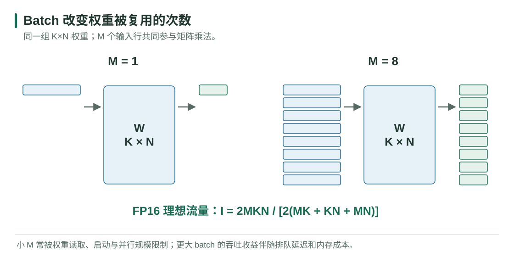
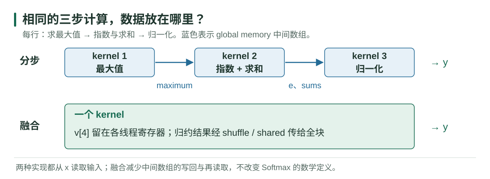
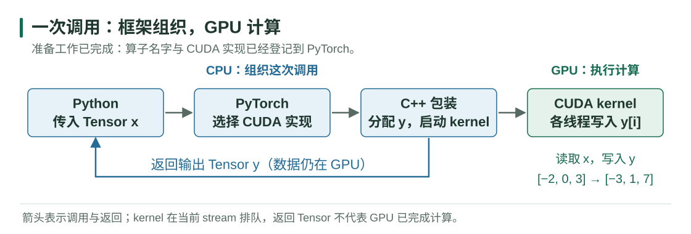
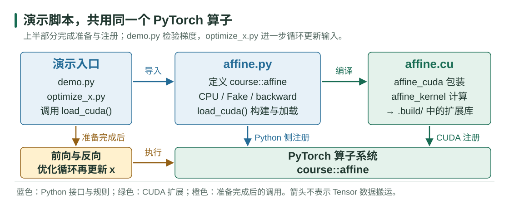

CUDA 与 PyTorch
承接分块与归约，用 cuBLAS 对照 GEMM，运行分步与融合 Softmax，再将简单 CUDA 算子注册到 PyTorch 并验证梯度。
学完这一讲，你能
- 核对线性层形状并用cuBLAS对照手写GEMM
- 实现稳定Softmax，在相同口径下比较融合与框架基线
- 将简单CUDA算子接回PyTorch并验证前向、接口和梯度
本讲概览与实验准备
从 CUDA 算子到神经网络计算
先看多层感知机（MLP）中的一个隐藏层：全连接层 + ReLU 激活函数。 MLP 将多个全连接层串联，在层间加入非线性激活；这一层的输出会作为下一层的输入。
本例将每个样本的 3 个输入特征变成 2 个输出特征：
y = torch.relu(x @ w + bias)
x @ w：矩阵乘，每个输出对三个输入特征做加权求和。+ bias：加偏置，给每个输出特征加一个偏置，各样本共用。torch.relu(...)：逐元素 ReLU，把负数变成 0，引入非线性。
一层模型计算因此包含多种 GPU 工作，这一行 Python 不一定只启动一次 kernel。本讲把已有基础接回模型：
| 已有基础 | 本讲应用 |
|---|---|
| 第六讲的矩阵乘与数据复用 | 线性层的前向、反向，以及 cuBLAS 对照 |
| 第七讲的最大值与求和归约 | 稳定 Softmax 与算子融合 |
| 第五讲的逐元素 CUDA kernel | 从 PyTorch 调用，并参与反向传播 |
先看一个小矩阵怎样生成输出，再沿数据流寻找可以减少的等待与读写。
第八讲源码与演示入口
下载第八讲全部源码（ZIP），在 x64 Native Tools Command Prompt（CMD） 中从解压位置执行：
cd .\课堂演示\08-dnns-on-gpus
code .
| 文件 | 演示内容 |
|---|---|
08_gemm.cu | 第六讲naive/shared基线与cuBLAS对照 |
08_softmax.cu | 分步与融合Softmax，含完整CPU参考 |
08_framework.py | PyTorch显式表达式与内置Softmax |
pytorch-affine/affine.py、affine.cu | 算子注册、CUDA实现与完整校验 |
pytorch-affine/demo.py | 用3个数演示前向与反向 |
pytorch-affine/optimize_x.py | 用梯度更新输入向量，让输出接近目标 |
common.cuh 提供已讲过的缓冲、计时和归约；lab08_utils.cuh 检查命令行参数。每个实验在对应位置给出编译和运行命令。
CUDA 与 PyTorch 实验环境
课程实验环境：RTX 5090 Laptop GPU，CUDA Toolkit 12.8，MSVC 19.29，Python 3.14，PyTorch 2.11.0+cu128。
nvcc --version
where cl
python -c "import torch; print(torch.__version__, torch.version.cuda); print(torch.cuda.is_available())"
| 运行内容 | 需要的环境 |
|---|---|
两个.cu实验 | Toolkit的nvcc、C++编译器；GEMM另链接cuBLAS |
| PyTorch内置操作 | Python与GPU版PyTorch |
| 自写CUDA扩展 | 上述两套环境，加Ninja构建工具 |
本例PyTorch使用cu128，与本地Toolkit 12.8配套。新Python环境可用 python -m pip install torch==2.11.0 --index-url https://download.pytorch.org/whl/cu128 安装；已有环境先查询，无需重复安装。
线性层与 cuBLAS
线性层：从一个小矩阵算起
两个样本，每个样本有三个特征，输出两个特征：M=2、K=3、N=2。
W 的第一列规定“第一个特征 + 第三个特征”；第二列规定“第二个特征 + 第三个特征”。两行样本共用同一套权重。
| 样本 | 矩阵乘的两个输出 | 加偏置 b=[1,−6] | ReLU：负数变 0 |
|---|---|---|---|
| [1,2,3] | [1+3, 2+3]=[4,5] | [5,−1] | [5,0] |
| [4,5,6] | [4+6, 5+6]=[10,11] | [11,5] | [11,5] |
把每个样本的加权求和一起写出来，就是 Y=XW+b，Z=ReLU(Y)。偏置按输出特征加到每一行，称为广播。
复习：导数、偏导数与梯度
导数回答：输入增加一点，输出大约变化多少？ 例如 y=3x，x 从 2 增加到 2.01，y 从 6 增加到 6.03，变化比例为 3，所以 dy/dx=3。
若 y=xw 同时依赖 x 和 w，就要说清楚“改变谁、固定谁”。这叫偏导数：
| 固定谁，改变谁 | 输出如何变化 | 偏导数 |
|---|---|---|
| 固定 w=3，改变 x | x 增加一点，y 的增量是它的 3 倍 | ∂y/∂x=w=3 |
| 固定 x=2，改变 w | w 增加一点，y 的增量是它的 2 倍 | ∂y/∂w=x=2 |
对一个标量损失 L，把它对各个变量的偏导数排在一起，就是梯度。对矩阵 X 求梯度，则每个位置保存 ∂L/∂Xᵢⱼ，形状仍与 X 相同。
接下来关心的是 x 通过 y，最终怎样影响损失 L。
复习：链式法则如何传递梯度
沿用 y=xw，x=2、w=3、y=6。设目标值是 2，用平方误差 L=(y−2)²/2 衡量差距，此时 L=8。
按平方函数求导，g=∂L/∂y=y−2=4。这个 g 告诉我们：y 增加一点，损失约增加它的 4 倍。
x 或 w → y → L：沿路径把两段影响相乘，就是链式法则。
| 改变谁 | 它对 y 的影响 | 对损失的影响：再乘 g=4 |
|---|---|---|
| 输入 x | x 增加一点，y 的增量是它的 3 倍 | dx=4×3=12 |
| 权重 w | w 增加一点，y 的增量是它的 2 倍 | dw=4×2=8 |
这里 dx、dw 是损失的梯度，不是参数更新量。沿一条路径相乘，多条路径汇合时相加。 下一页把这个规则用到矩阵中的每个元素。
线性层的前向与反向计算
沿用前面的小矩阵：M=2 个样本、K=3 个输入特征、N=2 个输出特征。令 G=∂L/∂Y；图中先给定 G=[[1,0],[1,1]]，下一页解释它如何经过 ReLU 传来。

dX 与 X 同形状，dW 与 W 同形状；转置让需要配对的元素对齐。
ReLU 的梯度：逐位置传回
小例子的线性层输出为 Y=[[5,−1],[11,5]]，ReLU 后是 Z=[[5,0],[11,5]]。
假设后续传给 Z 的四个梯度都是 1：
| 位置 | ReLU 前的值 | 梯度能否通过 | 传给 Y 的梯度 |
|---|---|---|---|
| 第一行、第一列 | 5 | 能 | 1 |
| 第一行、第二列 | −1 | 被截成 0，不再随该输入变化 | 0 |
| 第二行的两列 | 11、5 | 都能 | 1、1 |
于是传给线性层的梯度是 G_Y=[[1,0],[1,1]]，这就是上一页矩阵图中给定的 G。
⊙ 表示对应位置相乘；Y>0 的位置乘 1，其余乘 0。这里约定 ReLU 零点梯度为 0。
先经过 ReLU，再把 G_Y 传给矩阵乘和偏置加法。 接下来单独看偏置的梯度。
偏置的梯度：合并各样本的贡献
同一列的两个样本共用一个偏置。 b=[1,−6]：第一列都加 b₁=1，第二列都加 b₂=−6。
例如第一列的两个输出为 Y₁₁=4+b₁=5、Y₂₁=10+b₁=11。b₁ 增加一点，两者都会增加同样的一点，所以 ∂Y₁₁/∂b₁=∂Y₂₁/∂b₁=1。
上一页传回 G_Y=[[1,0],[1,1]]。按链式法则，每条路径乘上局部导数 1，再把共用同一偏置的路径相加：
| 偏置 | 使用它的输出位置 | 各路径贡献相加 |
|---|---|---|
| b₁：第一列 | Y₁₁、Y₂₁ | db₁=1×1+1×1=2 |
| b₂：第二列 | Y₁₂、Y₂₂ | db₂=0×1+1×1=1 |
因此 db=[2,1]：把梯度矩阵沿样本方向求和，每列得到一个数。
这里 i 是样本行号，j 是输出特征列号。前向把一个偏置加到多行，反向就把这些行的贡献收回来。
Batch 大小与权重复用

算 [1,2,3] 和 [4,5,6] 两个样本时，都需要 W 的同六个数。若把权重保留在片上，一次搬入就有机会服务多个样本。
batch 增大，相当于有更多样本使用同一套权重。 通常也有更多输出块可以交给 GPU 同时处理。
代价是更多激活存储，以及收集更多样本的等待。收益还取决于矩阵形状和硬件资源，不能把“batch 更大”理解为必然更快。
图表示复用机会，不保证每个权重恰好只从显存读取一次。
从教学 GEMM 到成熟矩阵库
第六讲的 shared GEMM 已经会把一块输入重复用于多个输出。矩阵乘的计算量相同，耗时也可能因形状和数据复用方式不同而变化。 下面用成熟库作基线，看看教学实现的性能处在什么位置。
cuBLAS 是 NVIDIA 提供的 GPU 线性代数库。本讲使用它的单精度矩阵乘 SGEMM，与两种教学实现对照：
| 实现 | 比较时观察什么 |
|---|---|
| naive | 每个线程独立计算一个输出的基础代价 |
| shared 16×16 | 合作加载与输入复用带来的变化 |
| cuBLAS SGEMM | 成熟库在同一计算任务上的表现 |
先固定输入、矩阵形状、FP32 精度口径与计时范围，再比较完整输出和耗时。演示程序已封装库调用，下面直接编译运行，再分析性能差距。
GEMM 的编译与库实现对照
在本讲目录编译，-lcublas 链接 CUDA Toolkit 中的 cuBLAS：
nvcc -O3 -std=c++17 -arch=sm_120 ^
-Xcompiler /O2,/utf-8 ^
08_gemm.cu -lcublas -o gemm.exe
.\gemm.exe --check-only
.\gemm.exe 512 512 512 20
.\gemm.exe 1024 1024 1024 20
参数依次是 M、N、K、每批次数。三种实现使用相同输入与 CPU FP64 参考；先看到 PASS，再读时间。
全部采用 FP32；cuBLAS 使用 CUBLAS_PEDANTIC_MATH。预热后用事件计时，内存分配、上传下载、CPU 校验均在计时之外。
GEMM 实测：教学实现与 cuBLAS
RTX 5090 Laptop，FP32，cuBLAS使用PEDANTIC模式；时间单位 ms/次。3次独立运行，每次预热3次、5批×20次；表中取三次批中位数的中位数。
| M×N×K | naive | shared 16×16 | cuBLAS SGEMM |
|---|---|---|---|
| 512³ | 0.0940 | 0.0693 | 0.0231 |
| 1024³ | 0.7737 | 0.5804 | 0.1169 |
以 1024³ 为例，cuBLAS 相比朴素版约快 6.6 倍，相比 shared 版约快 5.0 倍。三者计算同一个乘积，并通过同一 FP64 CPU 参考校验。
有了 shared memory，为什么仍差这么多？ 它解决了部分输入的重复读取，但每线程怎样复用数据、计算中还有多少等待，仍有优化空间。
三版都没有额外转置，分配与传输也在计时外。这里比较的是矩阵乘计算本身。
cuBLAS 为什么还能更快
shared 减少了 global 的重复读取；取数之后，计算还可以安排得更紧凑。
| 教学 shared GEMM 的安排 | 高性能 GEMM 的优化思路 |
|---|---|
| 固定 16×16 个输出 | 按形状选块大小，兼顾输入复用与 block 并行度 |
每线程只算一个输出；每次取一对数，更新一个 acc | 每线程算一小块输出；把输入保存在寄存器中，用于多个乘加 |
| 装入 → 同步 → 计算 → 同步 | 提前准备下一批数据，让搬运与当前计算尽量重叠 |
例如 K=1024、TK=16 时，教学版每个 block 有 64 轮、128 个同步点。除了乘加，取数与等待也占时间。
库会针对形状与硬件选择实现。上表解释常见优化思路，耗时表不能区分各项贡献。下一页用四个数看线程内复用。

线程变少，为什么仍可能更快
会减少总线程数，但不一定让 GPU 闲下来。 以 1024×1024 的输出为例，保持每个 block 为 256 个线程：
| 工作分配 | 每线程 1 个输出 | 每线程 2×2 个输出 |
|---|---|---|
| 一个 block 覆盖的输出 | 16×16 | 32×32 |
| 整次任务的 block 数 | 4096 | 1024 |
| 整次任务的线程数 | 1,048,576 | 262,144 |
这些线程本来就要分批执行。若剩下的 block 与驻留 warp 仍足够，减少线程总数并不等于计算单元少工作四分之三。
- 可能的收益： 每次取数服务更多乘加；四个独立累加器可以交错更新，减少单一依赖链带来的等待。
- 可能的损失： 每线程占用更多寄存器，可能减少同时驻留的 warp；矩阵太小、block 太少时，也可能用不满 GPU。
因此需要在数据复用、独立计算与线程并行度之间取平衡，不能只看线程数，也不是每线程算得越多越好。
Softmax：归约与融合
算子融合与中间数据
矩阵乘算得快之后，还要看它与下一步之间怎样交接。回到 relu(X@W+b)：矩阵乘结果加上偏置后，马上又被 ReLU 使用。
图中 E 是张量的元素总数，FP32 每个元素占 4 字节，所以 4E B = 4×E 字节，B 表示 Byte。例如 2×3 的张量有 E=6 个元素，完整读或写一次就是 24 字节。

融合可省去中间数组 Z 的一次写出和一次读回，共 8×E 字节；最终输出 Y 仍需写出。接下来用 Softmax 演示减少中间读写的过程。
Softmax：三个分数变成概率
Softmax 把一组分数变成总和为 1 的非负权重：分数越大，分到的权重越大。 一行输入为 [0,1,−1]。
先取最大值 1，把三个数同时减 1，再求指数并除以共同的和：
| 步骤 | 第0项 | 第1项 | 第2项 |
|---|---|---|---|
| 减去最大值 | −1 | 0 | −2 |
| 求指数 | 0.3679 | 1 | 0.1353 |
| 除以共同的和 1.5032 | 0.2447 | 0.6652 | 0.0900 |
例如第二项是 1/1.5032≈0.6652；三个权重相加约为 1。
若输入变成 [1000,1001,999]，相对差距没有变化；但直接求指数容易溢出。减最大值后仍是 [−1,0,−2]，即可用相同过程稳定计算。
稳定 Softmax 的计算步骤
对一行有限 logits：
共同减去 m 不改变实数结果，且指数输入不大于 0，避免正向指数溢出。分母至少包含一个 exp(0)=1，不会因全体极小而下溢为 0。
只约定非空、有限输入；含 +∞、NaN 或全 mask 的行须另外定义语义。
Softmax 的平移不变性
浏览器用双精度推演稳定步骤；直接 exp 仅用 fround 示意 FP32 范围。只处理非空、有限 logits，未模拟 CUDA expf 的逐位结果。
这里的三个元素始终只有相对差异：[0,1,-1] + 常数。
减最大值保证数值范围合理，但不会让浮点加法与指数变成精确实数运算。实现仍需与参考结果按明确容差比较。
分步 Softmax：三次调用的数据传递
继续看 [0,1,−1]：三个有效线程各拿一个数，但谁也不能只靠自己的数确定最终概率。
先合作得到共同的最大值 1，各自算指数；再合作得到共同的分母 1.5032，各自相除。 这就是第七讲归约的两次应用。

输入是一个 rows 行、cols 列的矩阵，每一行独立计算 Softmax；每个 block 负责一行：
- x、e、y：各有 rows×cols 项，依次保存输入、指数中间值、最终概率。
- maximum、sums：各有 rows 项，每行各存一个最大值和分母。
三个 kernel 在同一 stream 上依次执行，后一步读取前一步写出的数组。先读清分步代码，再把这些中间值留在同一个 block 内。
一行数据如何分给 256 个线程
以 rows=2、cols=300 为例：输入有两行，每行 300 个数，分别计算两组概率。
启动配置 <<<rows, 256>>>：rows 个 block，每个 block 256 个线程。
blockIdx.x 选行：block 0 算第 0 行，block 1 算第 1 行。每行内按下面的方式分工：
线程编号 threadIdx.x | 负责的列号 c（从 0 开始） |
|---|---|
| 0、1 | 线程 0：0、256；线程 1：1、257 |
| 43 | 43、299 |
| 44…255 | 各自只处理第 44…255 列 |
这就是 for (int c = threadIdx.x; c < cols; c += 256)：先处理自己编号对应的列，再跨过 256 列取下一项，直到越过行尾。
256 是示例选定的每 block 线程数，即 8 个 warp。 配套归约函数也按 256 个线程编写；它不是列数或硬件线程上限，不能只改启动参数。
分步 Softmax：先求每行最大值
x 保存输入，maximum 每行存一个最大值。先让各线程求自己负责元素的最大值，再合并成整行最大值。
__global__ void row_max(const float* x, float* maximum, int cols) {
int row = blockIdx.x; // 当前 block 负责的行
float m = -CUDART_INF_F; // 从负无穷开始找最大值
for (int c = threadIdx.x; c < cols; c += 256) {
size_t i = size_t(row) * cols + c; // 第 row 行、第 c 列的位置
m = fmaxf(m, x[i]); // 比较两个数，保留较大值
}
m = block_reduce<true>(m); // 合并所有线程的局部最大值
if (threadIdx.x == 0) maximum[row] = m;
}
索引 row * cols + c：先跳过前面的完整行，再走到第 c 列。例如第 1 行、第 43 列的位置是 1×300+43=343；size_t 是用于数组索引的无符号整数类型。
block_reduce<true> 是 common.cuh 中的辅助函数：true 选择求最大值，结果返回给全 block；只需线程 0 写出一份。未分到元素的线程保留负无穷，也必须参与归约。
分步 Softmax：保存指数并求每行分母
上一阶段已得到 maximum[row]。现在每个线程计算自己负责的指数，保存到数组 e，并将局部和合并成整行的分母 sums[row]。
__global__ void row_exp_sum(const float* x, const float* maximum,
float* e, float* sums, int cols) {
int row = blockIdx.x;
float m = maximum[row]; // 上一个 kernel 算出的行最大值
float sum = 0; // 本线程负责元素的指数和
for (int c = threadIdx.x; c < cols; c += 256) {
size_t i = size_t(row) * cols + c;
float v = expf(x[i] - m); // expf(a) 计算单精度的 exp(a)
e[i] = v; // 保存这一项，供下一阶段使用
sum += v; // 累加本线程负责的项
}
sum = block_reduce<false>(sum); // false 选择求和，得到整行分母
if (threadIdx.x == 0) sums[row] = sum;
}
这里的 e 是存放指数结果的数组名。对 [0,1,−1]，它保存约 [0.3679,1,0.1353]，而 sums[row]≈1.5032；归约前各线程的 sum 只包括自己负责的项。
分步 Softmax：归一化与完整调用
__global__ void row_normalize(const float* e, const float* sums, float* y, int cols) {
int row = blockIdx.x;
float sum = sums[row]; // 这一行共同的分母
for (int c = threadIdx.x; c < cols; c += 256) {
size_t i = size_t(row) * cols + c;
y[i] = e[i] / sum; // 指数除以整行指数和，得到概率
}
}
// rows>0；设备数组已分配，dx已上传输入。
row_max<<<rows,256>>>(dx.p, dm.p, cols);
row_exp_sum<<<rows,256>>>(dx.p, dm.p, de.p, ds.p, cols);
row_normalize<<<rows,256>>>(de.p, ds.p, dy.p, cols);
CUDA_CHECK(cudaGetLastError());
CUDA_CHECK(cudaDeviceSynchronize());
dx/dm/de/ds/dy 是设备缓冲区，依次对应 x/maximum/e/sums/y；.p 取出设备指针。三次调用都使用 rows 个 block、每 block 256 个线程，cols 告诉 kernel 每行有多少项。
计时包含三次调用，才对应完整的 Softmax。 它们在同一 stream 中按顺序执行，末尾的同步让 CPU 等待全部完成。
融合 Softmax：让线程保留中间结果
分步版完成一次计算后，线程结束；下一次 kernel 只能重新读取数组。若同一组线程连续做完，可以让数值留在各线程手里。
继续用同一行 [0,1,−1]，只列三个有效线程：
| 阶段 | 线程0保留 | 线程1保留 | 线程2保留 | 全行共享的信息 |
|---|---|---|---|---|
| 读入输入 | 0 | 1 | −1 | 合作求最大值 m=1 |
| 原地改成指数 | 0.3679 | 1 | 0.1353 | 合作求和 s≈1.5032 |
| 除以 s，写出结果 | 0.2447 | 0.6652 | 0.0900 | 每个线程都使用同一个 s |
max、exp、sum、除法都还在；省下的是中间数组写回、再读回，以及额外的 kernel 发射。 两次归约仍需要线程合作与同步。
一行元素较多时，让每个线程保留几项，仍按相同顺序计算。
融合 Softmax 的线程与数据分工
实际实现仍是 一block一行、256线程。每个线程最多保存4项，支持 1≤cols≤1024：
| 线程t | k=0 | k=1 | k=2 | k=3 |
|---|---|---|---|---|
| 0 | 列0 | 列256 | 列512 | 列768 |
| 1 | 列1 | 列257 | 列513 | 列769 |
| 255 | 列255 | 列511 | 列767 | 列1023 |
因此 c=t+256*k。v[4] 是每线程私有的四个值，不是整个block共享的数组；同一k下，相邻线程仍读取相邻列。
只有3列时，线程0…2的v[0]有效，其余槽补−∞；它们求指数后为0。所有256线程仍参加最大值与求和归约，最后仅有效位置写回。
装入并保留 → 全行max → 原地变成指数 → 全行sum → 除分母写回。
固定长度数组与寄存器复用
v[4] 给每个线程准备 4 个私有的 float 槽位。 一行由一个 block 的 256 个线程处理，因此最多容纳：
256 个线程 × 每线程 4 项 = 1024 列。 cols 是实际列数，可以小于 1024；超出行尾的槽位补 −∞，求指数后为 0。
长度在编译时确定。 不能用运行时传入的 cols 直接声明 float v[cols]；也可以给常数起名：
constexpr int ITEMS = 4; // 编译时已知的每线程容量
float v[ITEMS]; // 与 float v[4] 相同
固定长度 + #pragma unroll： 提示编译器展开四轮循环，更容易把 v[0]～v[3] 当作四个独立变量放进寄存器，连续完成 读入 → 求最大值 → 求指数 → 求和 → 相除，减少中间值写回显存再读入。
固定长度并不保证全部使用寄存器。数组过大、索引难以确定或寄存器不足时，可能使用位于显存中的 local memory；每线程保留更多项，也可能减少同时驻留的线程。
循环展开：从四轮循环到四份操作
#pragma unroll 告诉编译器展开紧接着的循环。只看逐项求指数这一步，row_max 是已得到的全行最大值：
#pragma unroll
for (int k = 0; k < 4; ++k) {
v[k] = expf(v[k] - row_max);
}
// 展开后的等价计算（示意，不需要再写一遍）
v[0] = expf(v[0] - row_max);
v[1] = expf(v[1] - row_max);
v[2] = expf(v[2] - row_max);
v[3] = expf(v[3] - row_max);
减少循环控制开销，让下标固定为 0、1、2、3，有利于把四项留在寄存器中并安排指令执行。四份操作仍由同一个线程完成，不会增加线程，也不会自动同步线程。
融合 Softmax 的完整 kernel
__global__ void softmax_rows(const float* x, float* y, int cols) {
float v[4], local_max = -CUDART_INF_F;
#pragma unroll
for (int k = 0; k < 4; ++k) {
int c = threadIdx.x + 256*k;
v[k] = c < cols ? x[size_t(blockIdx.x)*cols+c] : -CUDART_INF_F;
local_max = fmaxf(local_max, v[k]);
}
float row_max = block_reduce<true>(local_max), local_sum = 0;
#pragma unroll
for (int k = 0; k < 4; ++k) {
v[k] = expf(v[k] - row_max);
local_sum += v[k];
}
float row_sum = block_reduce<false>(local_sum);
#pragma unroll
for (int k = 0; k < 4; ++k) {
int c = threadIdx.x + 256*k;
if (c < cols) y[size_t(blockIdx.x)*cols+c] = v[k] / row_sum;
}
}
softmax_rows<<<rows,256>>>(d_x, d_y, cols); // rows>0，1≤cols≤1024
融合 Softmax：加载与最大值
// blockDim.x=256，gridDim.x=rows，1<=cols<=1024
float v[4];
float local_max = -CUDART_INF_F;
#pragma unroll
for (int k = 0; k < 4; ++k) {
int c = threadIdx.x + 256*k;
v[k] = c < cols ? x[size_t(blockIdx.x)*cols+c] : -CUDART_INF_F;
local_max = fmaxf(local_max, v[k]);
}
float row_max = block_reduce<true>(local_max);
block_reduce<true> 在实验 helper 中使用 warp shuffle 与 shared memory，结果广播给全 block；固定 256 线程全部参与。
这是第七讲的归约应用：每个线程拥有多项数据，但整行共享一个最大值。
融合 Softmax：指数求和与写回
float local_sum = 0.0f;
#pragma unroll
for (int k = 0; k < 4; ++k) {
v[k] = expf(v[k] - row_max);
local_sum += v[k];
}
float row_sum = block_reduce<false>(local_sum);
#pragma unroll
for (int k = 0; k < 4; ++k) {
int c = threadIdx.x + 256*k;
if (c < cols) y[size_t(blockIdx.x)*cols+c] = v[k] / row_sum;
}
无效槽的 exp(−∞)=0 不改变和。所有线程获得同一个row_sum，再只把有效列写回。
256线程×每线程4项最多覆盖1024列。把行长改为4096，需要重新安排加载和归约，不能仅增加grid中的block数。
Softmax 融合：相同计算，更少中间读写
| 对照项 | 分步实现 | 融合实现 |
|---|---|---|
| 数学步骤 | max → exp与sum → 归一化 | 相同 |
| kernel调用 | 3次 | 1次 |
| 指数中间值 | 写入e，再从e读回 | 在线程私有v[4]中保留 |
| 行统计量 | global中的maximum/sums | block归约结果 |
| 主数组逻辑读写 | 读x两次、写e、读e、写y | 读x一次、写y一次 |
FP32下，主数组逻辑流量由约 20×rows×cols B 降至 8×rows×cols B。这不包含行统计量，也不是实测DRAM字节；缓存会影响实际传输。
融合仍需两次归约及其同步。减少中间数组和发射次数是否值得，要比较同样输入、完整输出的实测时间。
Softmax 的编译与运行
nvcc -O3 -std=c++17 -arch=sm_120 ^
-Xcompiler /O2,/utf-8 ^
08_softmax.cu -o softmax.exe
.\softmax.exe --check-only
.\softmax.exe 7 33 20
.\softmax.exe 4096 1003 20
参数是 行数、列数、每批次数，当前列数限定1–1024。
- 分步版：
row_max → row_exp_sum → row_normalize，统计量和指数中间数组写入 global memory。 - 融合版：一行由一个 block 完成，线程保留4项，连续进行两次归约。
两版都用减最大值的稳定公式。分步版的计时包含全部三次发射，不是只计最后一步。
Softmax 实测：分步与融合
RTX 5090 Laptop，FP32，单位 ms/次。3次独立运行，每次预热3次、5批×20次；表中取三次批中位数的中位数。
| 行数×列数 | 三次kernel | 一次融合 | 加速比 |
|---|---|---|---|
| 7×33 | 0.01889 | 0.00641 | 2.95× |
| 4096×1003 | 0.05325 | 0.01667 | 3.19× |
两个规模上，融合版都明显受益。 小输入减少发射的价值突出；较大输入还省掉了指数数组等中间读写。
这张表测完整设备区间，不含分配与复制。它支持融合有效，不能单独分解“少发射”和“少搬运”各贡献多少。
Softmax 实现的形状约束
本课 softmax 示例限定每行最多 1024 个有限输入，一 block 256 线程，每线程最多保留 4 项。
| 形状 | 可以研究的方向 |
|---|---|
| 很短、行很多 | 一个 warp 处理一行，减少块内同步 |
| 中等行长 | 一 block 一行，寄存器保留数据 |
| 很长的行 | 每线程更多项，或分阶段统计与归一化 |
| 行很少 | 检查整卡并发是否不足 |
增加每线程寄存器会影响 occupancy；拆成多个 block 又增加全局合并。选择来自行长、行数与容量，不能只按总元素数选 kernel。
PyTorch 中的同口径对照
PyTorch 中的两种 Softmax 写法
x 是 GPU 上的 FP32 二维张量。下面两种写法都按 eager（即时执行） 模式运行：
def explicit_softmax(x):
m = x.amax(dim=-1, keepdim=True) # 1. 求每行最大值
shifted = x - m # 2. 减最大值
e = shifted.exp() # 3. 求指数
s = e.sum(dim=-1, keepdim=True) # 4. 求每行指数和
return e / s # 5. 归一化
y = torch.softmax(x, dim=-1) # 把完整 Softmax 交给一个算子
dim=-1 沿每行的列方向；keepdim=True 保留单列形状，便于广播。两者数学计算相同。
eager 遇到一个框架操作，就调用它的实现。 显式五步通常分别提交 kernel，不会因为写在同一个 Python 函数里就自动融合；torch.softmax 则调用完整算子的专用实现。
同一 stream 上的 kernel 可以异步提交、按顺序执行，CPU 不必逐步等待；排在同一队列里，不等于融合成一个 kernel。
从分步 CUDA 到 PyTorch 算子融合
| PyTorch 写法 | 与前面 CUDA 实验对应的思路 |
|---|---|
| 显式五步，eager 执行 | 分步版：分别提交操作，后续操作读取前面的中间张量 |
torch.softmax，eager 执行 | 融合版的思路：交给专用实现，利用融合和形状适配减少中间读写、发射与调度开销 |
对应的是实现思路，不是精确的 kernel 数量。 教学 CUDA 是“三次发射 vs 一次发射”；PyTorch 显式五步不一定恰好五个 kernel，内置算子也不保证对所有形状都只用一个。
另一条路径是 torch.compile(explicit_softmax)：编译器分析多步计算，尝试跨算子融合。下面的实验未启用 compile，比较的是两种 eager 写法。
python .\08_framework.py --check-only
python .\08_framework.py --rows 4096 --cols 1003
先与 CPU FP64 参考核对，再按相同框架调用口径计时。
复习：PyTorch CUDA 事件计时
fn 是待测函数（explicit_softmax或torch.softmax包装），x已在GPU，repeats为每批次数：
for _ in range(10):
fn(x) # 预热
start = torch.cuda.Event(enable_timing=True)
stop = torch.cuda.Event(enable_timing=True)
start.record()
for _ in range(repeats):
y = fn(x)
stop.record()
stop.synchronize()
ms = start.elapsed_time(stop) / repeats
脚本取5批结果的中位数，并再次校验输出。输入预先在 GPU 上，不含 CPU↔GPU 复制。
每次 fn 都申请输出和必要中间张量；Python 提交不及时形成的 GPU 空隙也可能落入事件区间。这个口径不同于预分配缓冲的纯 CUDA 实验。
PyTorch Softmax 的实测对照
PyTorch 2.11.0+cu128，RTX 5090 Laptop，4096×1003、FP32。每次预热10次、5批×50次，再取3次独立运行的中位数。
| 前向写法 | 代表时间 / ms | 三次运行范围 / ms |
|---|---|---|
| 显式五步（eager） | 0.08509 | 0.08230–0.08599 |
torch.softmax（eager） | 0.01931 | 0.01813–0.01941 |
这个形状上，内置算子比显式表达式快约 4.41倍，两者都通过 CPU FP64 参考校验。两者均未启用 torch.compile。
这里包含框架分配与提交的影响，不能直接与预分配缓冲的CUDA表格排名。替换模型算子时，应在同一框架入口比较完整调用。
自定义算子与 PyTorch
从 CUDA kernel 到 PyTorch 算子
前面已经能写 CUDA kernel，也看到了 PyTorch 内置算子的效果。接下来希望：模型传入一个 Tensor，就能使用我们写的 CUDA 计算，并得到新的 Tensor。
先用逐元素操作 y=2x+1 串起接入流程；affine 意为“仿射变换”，这里就是乘以 2，再加 1。
三个数就能手算：输入 [−2, 0, 3]，输出 [−3, 1, 7]。
| 层次 | 面向什么 | 本例负责什么 |
|---|---|---|
| PyTorch 算子 | Tensor：数据、形状、dtype、设备 | 接收 x，返回可继续参与模型计算的 y |
| CUDA kernel | 数据指针、元素数与线程索引 | 各线程执行 y[i] = 2*x[i] + 1 |
包装函数把 Tensor 接到 kernel；注册让 PyTorch 知道应该调用哪个函数。先接通前向计算，再补上反向传播规则。
一次 PyTorch 调用怎样执行 CUDA kernel
注册就是告诉 PyTorch“算子名字 → 实现函数”。本例输入是 CUDA Tensor，便选择 CUDA 实现。

准备阶段： load_cuda() 用 nvcc 与 C++ 编译器生成扩展库，再加载、登记 CUDA 实现；源码未变可复用编译缓存。
每次调用： CPU 运行 C++ 包装函数，GPU 执行 kernel；无需重新编译。
注册后的算子在 Python 中怎样调用
我们给算子起名 course::affine，注册后对应 Python 入口 torch.ops.course.affine：
| 名字 | 含义 |
|---|---|
torch.ops | PyTorch 中访问已注册算子的入口 |
course | 我们选择的命名空间，用于组织名字、避免重名 |
affine | 我们定义的算子名；(x) 表示传入 Tensor x |
import torch
from affine import load_cuda # 导入本例 affine.py，先登记算子接口
load_cuda() # 编译并加载 CUDA 实现，完成准备
x = torch.tensor([-2., 0., 3.], device="cuda")
y = torch.ops.course.affine(x) # y 中的三个值是 -3、1、7
算子注册：用同一个名字连接接口与实现
Python 先定义接口： 算子叫 course::affine，接收一个 Tensor，返回一个 Tensor。
lib = torch.library.Library("course", "DEF") # DEF 表示定义接口
lib.define("affine(Tensor x) -> Tensor")
C++ 再登记实现： 这个算子的 CUDA 实现，请调用包装函数 affine_cuda。
TORCH_LIBRARY_IMPL(course, CUDA, m) {
m.impl("affine", &affine_cuda);
}
CUDA 输入：torch.ops.course.affine(x) → affine_cuda(x) → affine_kernel<<<...>>>(...)
依次为 Python 算子入口 → C++ 包装函数 → GPU kernel。两处注册必须对应上 course 和 affine；后两个函数可另起名字，只要注册与调用指向正确的函数。
Tensor 与设备指针：包装函数连接什么
把刚才的一维输入换成六个数：PyTorch 还知道它们组成 2×3 的 FP32 张量，位于某块 GPU；本例 CUDA kernel 只收到地址与长度。
| 包装函数要做的事 | 为什么需要 |
|---|---|
| 检查 dtype、设备与连续布局 | 确保 float* 和连续索引的读法正确 |
| 选择输入所属 GPU，分配同形状输出 | 保留 Tensor 的设备、形状与类型 |
| 取得指针和 n=6 | 把 Tensor 转换成 kernel 所需的参数 |
| 使用 PyTorch 当前 stream | 接上该 stream 中前序操作与后续消费者的顺序 |
本例要求连续 FP32 输入；输出与输入形状、dtype、设备相同，分配新存储且不修改 x。在当前 stream 上排队不等于让 CPU 等待，也不需要把输入搬回 CPU。
下一页的 kernel 按连续一维数组遍历六项，包装函数让返回的结果继续保持 2×3。
CUDA kernel 与 Tensor 包装函数
__global__ void affine_kernel(const float* x, float* y, int64_t n) {
for (int64_t i = int64_t(blockIdx.x)*blockDim.x+threadIdx.x;
i < n; i += int64_t(blockDim.x)*gridDim.x)
y[i] = 2.0f*x[i] + 1.0f;
}
包装函数处理Tensor，kernel处理指针。先对照这几个名字：
| 名字 | 含义 |
|---|---|
x.numel() | 总元素数n，与张量维数无关 |
x.data_ptr<float>() | FP32数据的设备指针 |
x.sizes() / x.options() | 形状 / dtype与设备等配置 |
at::empty(...) | 为输出分配新Tensor |
CUDAGuard | 在本次调用期间选择x所属的GPU |
二维输入仍按连续的一维数组遍历，输出保持原形状。下一页把这些步骤合起来。
CUDA 包装与注册的完整过程
at::Tensor affine_cuda(const at::Tensor& x) {
TORCH_CHECK(x.is_cuda() && x.scalar_type()==at::kFloat && x.is_contiguous(),
"course::affine CUDA requires contiguous float32 input");
c10::cuda::CUDAGuard guard(x.device());
auto y=at::empty(x.sizes(), x.options());
const int64_t n=x.numel();
if(n) {
const int blocks=int(std::min<int64_t>((n+255)/256,4096));
affine_kernel<<<blocks,256,0,at::cuda::getCurrentCUDAStream()>>>(
x.data_ptr<float>(), y.data_ptr<float>(), n);
C10_CUDA_KERNEL_LAUNCH_CHECK();
}
return y;
}
TORCH_LIBRARY_IMPL(course, CUDA, m) { m.impl("affine", &affine_cuda); }
检查 → 选择设备 → 分配输出 → 在PyTorch当前stream发射 → 返回Tensor。 空张量跳过launch。TORCH_CHECK 检查输入约定；发射检查不强制等待GPU完成。
自定义算子的反向传播
前向计算 y=2x+1；反向收到上游梯度 g=∂L/∂y，要传给输入的梯度是 dx=∂L/∂x=2g。
| 输入 x | 输出 y=2x+1 | 上游梯度 g | 输入梯度 dx=2g |
|---|---|---|---|
| [−2, 0, 3] | [−3, 1, 7] | [1, 2, −1] | [2, 4, −2] |
def backward(ctx, grad_out):
return 2 * grad_out # 局部导数恒为 2，无需保存前向输入 x
torch.library.register_autograd("course::affine", backward)
本例 grad_out 是 CUDA Tensor，2 * grad_out 会调用 PyTorch 内置的乘法 CUDA kernel，在 GPU 上得到输入梯度。前向用自写 kernel，反向可以复用内置实现。
梯度规则 dx=2g 由我们提供，PyTorch 负责执行其中的乘法。 它不会自动从自定义 CUDA 前向代码推导出这条规则。
Fake 实现：让框架提前知道输出形状
y = torch.ops.course.affine(x) # 已知 x 是 2×3；y 是什么形状？
z = y @ w # 已知 w 是 3×4；能否相乘？
框架分析计算图时，要先知道 y 的形状。接口 Tensor → Tensor 没有说明这一点；我们补充 Fake 规则，告诉它 y 与 x 同形状，因此 y 是 2×3，z 是 2×4。
@torch.library.register_fake("course::affine")
def affine_fake(x):
contract(x) # 检查输入的类型、设备与连续布局
return torch.empty_like(x) # 输出沿用 x 的形状、dtype、设备
在 Fake 环境中，empty_like 返回元信息占位张量，不分配真实数据存储，也不计算数值。
实际前向用 CUDA 实现，反向用已注册的 backward；Fake 用于 torch.compile 等计算图分析，普通 eager 调用不会每次都经过它。
Python 注册的完整过程
lib = torch.library.Library("course", "DEF")
lib.define("affine(Tensor x) -> Tensor")
def contract(x):
allowed = (torch.float32, torch.float64) if x.device.type == "cpu" else (torch.float32,)
torch._check(x.device.type in ("cpu", "cuda"))
torch._check(x.dtype in allowed)
torch._check(x.is_contiguous())
@torch.library.impl(lib, "affine", "CPU")
def affine_cpu(x):
contract(x)
return 2*x + 1
@torch.library.register_fake("course::affine")
def affine_fake(x):
contract(x)
return torch.empty_like(x)
def backward(ctx, grad_out):
return 2*grad_out
torch.library.register_autograd("course::affine", backward)
文件先 import torch。CUDA 实现在 affine.cu 中注册；load_cuda() 加载扩展库后，与本页共同组成完整算子。
自定义算子：文件如何连接

前向： demo.py 调用 affine(x)，CUDA 输入走 affine_cuda → affine_kernel。
反向： y.backward(g) → affine.py 的 backward → PyTorch 内置乘法 CUDA kernel。
课堂演示：用三个数走完前向与反向
import torch
from affine import affine, load_cuda
load_cuda() # 编译/加载前面讲过的CUDA实现
x = torch.tensor([-2., 0., 3.], device="cuda", requires_grad=True)
y = affine(x)
g = torch.tensor([1., 2., -1.], device="cuda")
y.backward(g)
print("y =", y.detach().cpu().tolist())
print("dx =", x.grad.cpu().tolist())
脚本：pytorch-affine/demo.py。affine 简写自 torch.ops.course.affine.default。
requires_grad=True 请求记录梯度，backward(g) 传入上游梯度。先预测 y 与 dx，下一页运行核对。
detach() 脱离梯度图，.cpu().tolist() 取回数值用于打印。
课堂演示：编译运行与结果
在本讲目录的 CMD 开发终端执行。首次安装 Ninja 来组织编译；已有 Ninja 时，直接运行第二条命令：
python -m pip install --target .\pytorch-affine\.tools ninja
python -X utf8 .\pytorch-affine\demo.py
x = [-2.0, 0.0, 3.0]
y = [-3.0, 1.0, 7.0]
upstream g = [1.0, 2.0, -1.0]
dx = [2.0, 4.0, -2.0]
PASS: y=2*x+1, dx=2*g
先核对 y=2x+1，再核对 dx=2g。 这验证了从 Python 调用到 CUDA 前向，再回传梯度的完整流程。
load_cuda() 首次调用 nvcc 与 C++ 编译器，之后可复用构建缓存。-X utf8 让 Python 使用 UTF-8，适合含中文的课程目录。
从计算梯度到优化输入向量
前面人为指定了上游梯度。现在给出目标向量 target=[7,−3,5]，从 x=[0,0,0] 出发，让 y=affine(x) 逐步接近它。
| 第一次迭代 | 三个元素分别计算 |
|---|---|
前向：y=2*x+1 | [1, 1, 1] |
上游梯度：g=y-target | [−6, 4, −4] |
反向：x.grad=2*g | [−12, 8, −8] |
更新：x -= 0.1*x.grad | [1.2, −0.8, 0.8] |
更新后输出变为 [3.4, −0.6, 2.6]，三个元素都更接近目标。学习率 0.1 控制每次调整幅度；这里优化的是 x 向量，常数 2 和 1 不变。
向量优化：完整循环
import torch
from affine import affine, load_cuda
load_cuda()
x = torch.zeros(3, device="cuda", requires_grad=True)
target = torch.tensor([7., -3., 5.], device="cuda")
lr = 0.1
for step in range(20):
x.grad = None
y = affine(x)
loss = 0.5 * (y - target).square().sum()
loss.backward()
with torch.no_grad():
x -= lr * x.grad
square().sum() 把三个平方误差加成一个标量 loss；loss.backward() 自动把梯度传回 x，不必手写 g。
x.grad=None 清除上一轮梯度；no_grad() 让更新动作不进入求导图，下一轮仍对新的 x 正常求导。
运行结果：向量逐步接近目标
在本讲目录的 CMD 开发终端运行 pytorch-affine/optimize_x.py：
python -X utf8 .\pytorch-affine\optimize_x.py
| 已更新次数 | 输入 x | 输出 y | loss |
|---|---|---|---|
| 0 | [0, 0, 0] | [1, 1, 1] | 34 |
| 1 | [1.2, −0.8, 0.8] | [3.4, −0.6, 2.6] | 12.24 |
| 5 | [2.7667, −1.8445, 1.8445] | [6.5334, −2.6890, 4.6890] | 0.205585 |
| 20 | [2.9999, −1.9999, 1.9999] | [6.9998, −2.9999, 4.9999] | 约 4.5×10⁻⁸ |
x 接近 [3,−2,2]，y 接近目标 [7,−3,5]，loss 持续减小。 每行的 x、y、loss 都对应同一次更新状态。
把自定义算子接回模型
刚才直接更新输入 x。现在把同一个 affine 放在线性层后，让损失的梯度通过中间结果 h，继续传回模型参数：
layer = torch.nn.Linear(3, 2).to("cuda")
x = torch.randn(5, 3, device="cuda", requires_grad=True)
h = layer(x)
y = torch.ops.course.affine(h) # h、y 都是 5×2
loss = y.square().mean()
loss.backward() # 梯度传回 x 和线性层参数
前向： x → Linear → 自写 affine → loss；反向： 沿相反方向传播，affine 把收到的梯度乘以 2。
脚本已与 (2*layer(x)+1).square().mean() 对照，损失和输入、权重、bias 的梯度均通过校验。接下来单独比较 affine 前向的调用时间。
自写融合算子为何比 eager 表达式更快
RTX 5090 Laptop，PyTorch 2.11.0+cu128，FP32；对照同一输入的 affine 前向完整调用。
| 元素数 | eager 2*x+1 | 自写融合 affine | 加速比 |
|---|---|---|---|
| 257 | 17.75 μs | 12.77 μs | 1.39× |
| 1,048,576 | 17.26 μs | 12.83 μs | 1.35× |
eager：x → 乘 2 的 kernel → 中间张量 t → 加 1 的 kernel → y
自写 ：x → 一个 kernel 内完成 2*x+1 → y
融合带来约 1.35—1.39 倍加速：少一次 kernel 提交，省去中间张量的写回与读取。
未启用 torch.compile；计时含 Python 调用与分配，不含首次编译与传输。
复现：python -X utf8 .\pytorch-affine\affine.py --cuda --benchmark。
本讲小结
本讲小结
- 线性层把前向与梯度组织成不同形状的 GEMM；成熟库是重要基线。
- Softmax复用第七讲的归约，先保证稳定性，再减少中间写读与发射。
- 自定义算子除了 kernel，还需要输入约定、框架注册、元信息与梯度验证。
到这里，已经能编译、解释、校验并比较基础 CUDA 算子，并将它们接回模型的计算图。